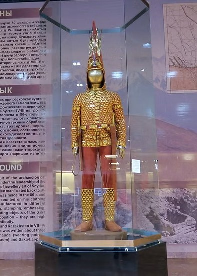
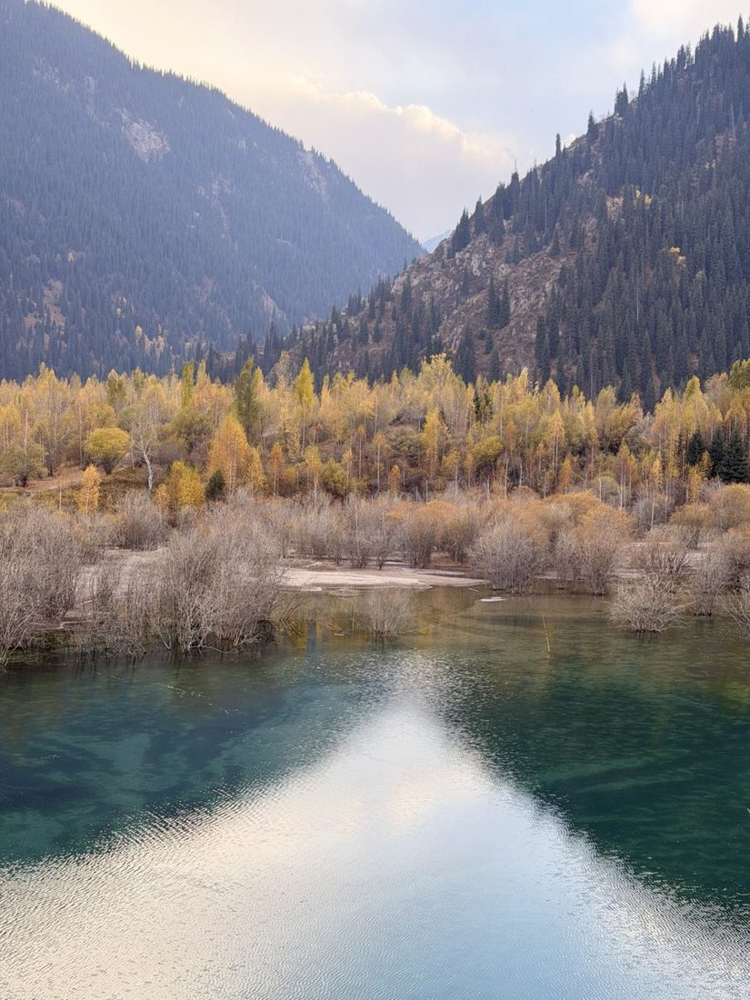
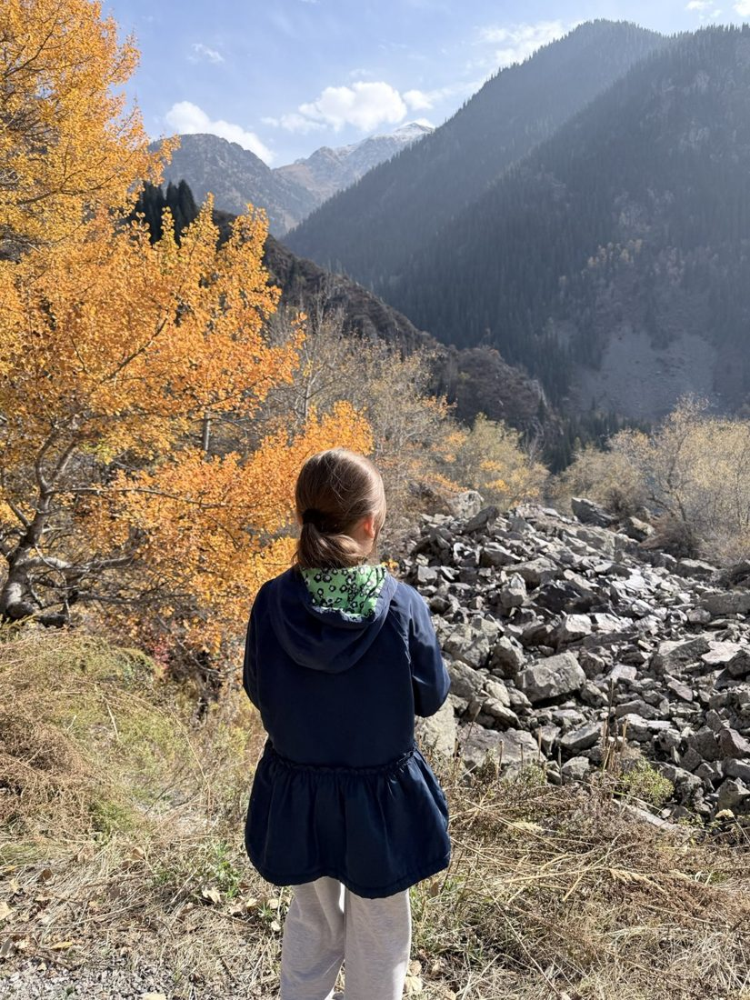

культура · поездка домой · октябрь 2026
🏔️ Иссык: трагедия и золото

Иссык, октябрь 2026
В октябре, когда я была в Алматы, подруга с семьёй взяли меня на озеро Иссык. Бирюзовая вода, золотые берёзы, горы в дымке — красота невероятная. А за этой красотой стоит история, от которой захватывает дух.
🌊 Трагедия
До 7 июля 1963 года Иссык называли изумрудом гор: гостиница, лодочные причалы, автобусы из Алма-Аты по выходным. В то жаркое воскресенье талые воды ледника Жарсай прорвали моренную плотину. Около двух часов дня по ущелью пошла первая волна селя, а всего их было двенадцать: грязь, валуны, вырванные деревья. Природная плотина озера не выдержала, и Иссык почти опустел. Пострадал и городок внизу.
Директор турбазы «Иссык» Иван Аушев обходил берег с мегафоном, предупреждал людей, а потом на лодке увозил их в безопасные места.
Газеты в 1963 году о погибших не написали ни слова, официальных цифр так и не опубликовали. По воспоминаниям, жертв было от 50 до 2 000. Подробнее об этом дне и архивные фотографии — в статье Анны Дегтярёвой «Трагедия, о которой молчали газеты».
🕊️ Легенды ущелья
голубь из облака
О том дне рассказывают и две легенды.
В первой — старый пастух. По-русски он почти не говорил, а слова «сель» и вовсе не знал. Он прибежал к людям у озера и кричал по-казахски: «Кетіңдер! Қара лай келе жатыр!» — «Уходите! Чёрная грязь идёт!» Его не поняли. Он не умел читать, но горы он читал лучше всех. Он почувствовал беду раньше людей, и вместе с ним почувствовали её овцы, лошадь и собака.
Во второй — пионеры. Неподалёку стоял пионерский лагерь, и в тот день группа школьников вышла в поход. Их тропа вела туда, где позже сель ударил сильнее всего. Но через какое-то время трое детей вдруг почувствовали себя плохо. Почему — никто не знает. Группа остановилась, и это, возможно, спасло всех.
Кто их остановил? Может быть, над ущельем и тогда летал тот самый голубь из облака.
👑 Золотая находка

Алтын адам, Золотой человек
Прошло шесть лет. В 1968 году Иссык получил статус города, и у въезда начали строить автопарк. По советскому закону об охране памятников землю сначала проверили археологи, а на месте стройки стоял курган высотой шесть метров. Раскопками руководил Бекен Нурмуханбетов, описание и реконструкцию сделал Кемаль Акишев. Центральную могилу ограбили ещё в древности, но Нурмуханбетов попросил расчистить участок чуть в стороне, и там нашли нетронутую деревянную гробницу.
В ней лежал молодой сакский воин, лет 16–18, в одеянии из более чем 4 000 золотых украшений, с высоким остроконечным головным убором около 70 сантиметров и серебряной чашей с надписью из 26 загадочных знаков.
✨ Сегодня
«Золотой человек» — Алтын адам — стал символом Казахстана. Его фигура на крылатом барсе венчает монумент Независимости в Алматы.
А озеро вернулось. К началу 90-х плотину восстановили, и сегодня Иссык снова бирюзовый. Я стояла на его берегу и думала, сколько он пережил. А в тот день, кажется, радовались даже ангелы: они прислали нам голубя из облака 🕊️☁️
скоро будет
Иссык, 1963

вода вернулась, 2026

у воды

смотрит на горы

осень в ущелье
За неожиданными потрясениями и тяжёлыми ударами часто прячутся возможности, которых никто не ждал. Нужно только присмотреться.
← культураесли откликнулось, оставь сердечко 🤍
можно нажимать сколько хочется
спасибо, записка у меня 🤍